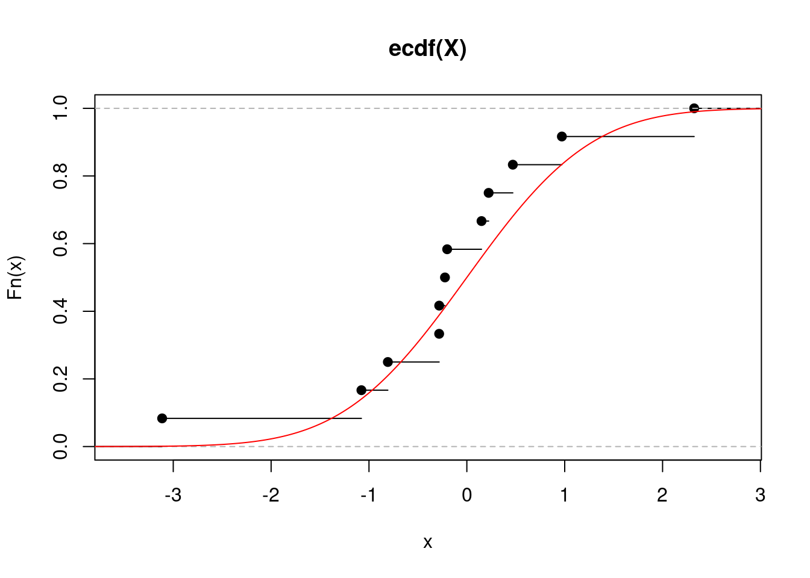
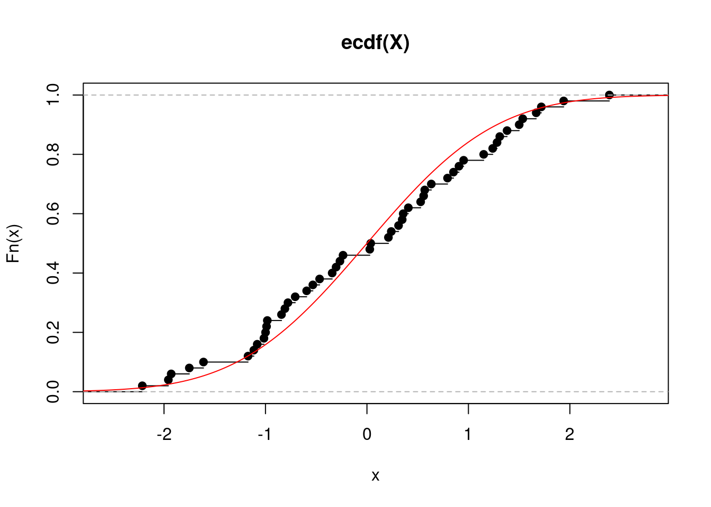
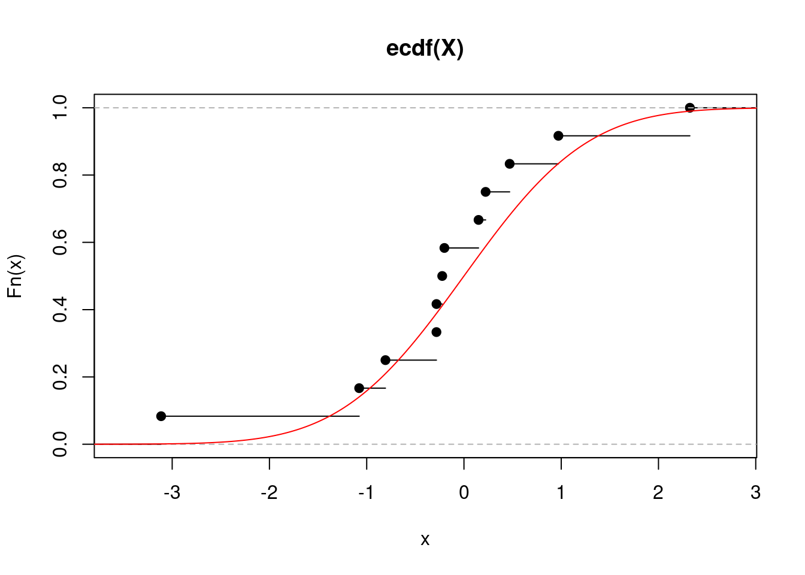
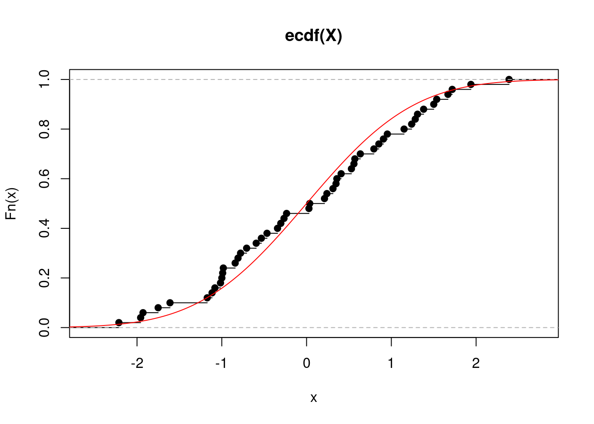
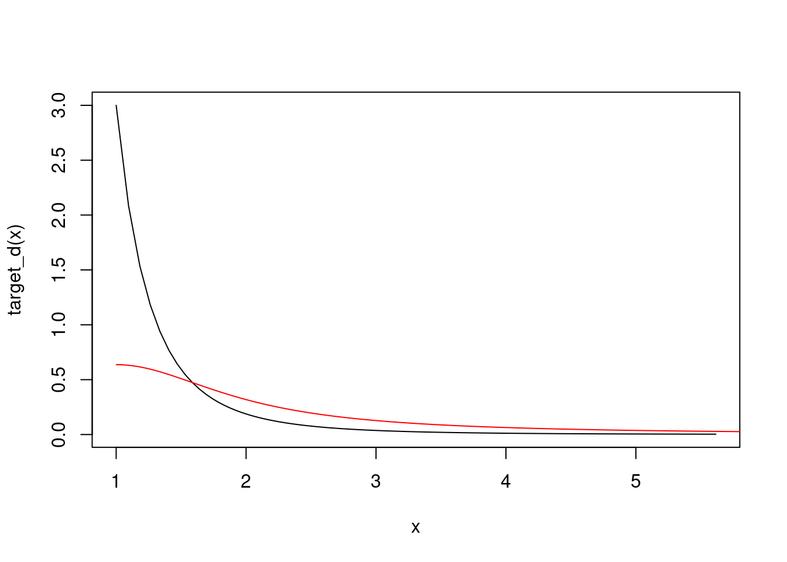
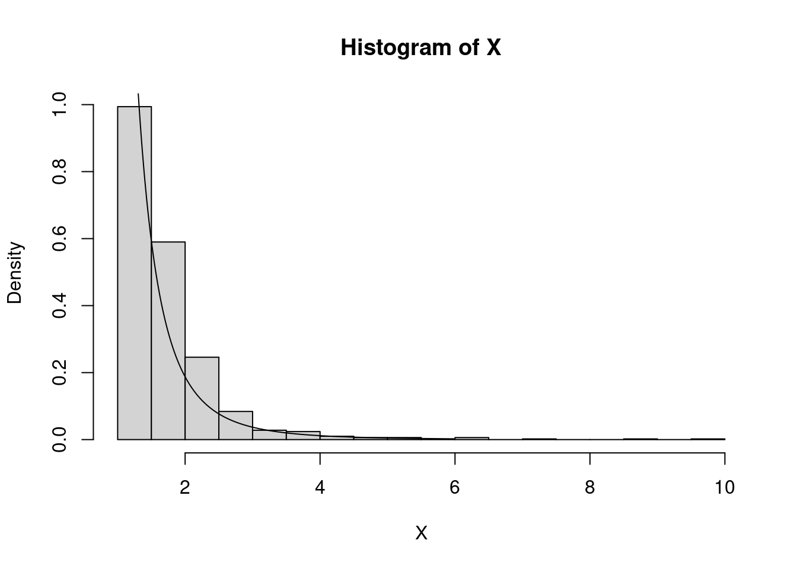

edf_plot <- function(N){
X <- rnorm(N)
EDF <- ecdf(X)
plot(EDF)
x <- seq(-4,4,by=0.01)
points(x,pnorm(x),type="l",col="red")
}
set.seed(517)
edf_plot(12)
edf_plot(50)

The primary goal of statistics is to extract information about a population (described by the distribution function \(F\)) based on a random sample \(\mathcal{X} = \{ X_1,\ldots,X_N \}\) from this population. More often than not, one is interested in a particular characteristic of the population denoted generally by \(\theta = \theta(F)\).
Leading Ex.: The mean \(\theta = \mathbb{E}X_1 = \int x d F(x)\). \(\Delta\)
Let us focus generally on \(F\) rather than specifically on \(\theta\). We can estimate \(F\)
edf_plot <- function(N){
X <- rnorm(N)
EDF <- ecdf(X)
plot(EDF)
x <- seq(-4,4,by=0.01)
points(x,pnorm(x),type="l",col="red")
}
set.seed(517)
edf_plot(12)
edf_plot(50)

Leading Ex.: The empirical estimator of the mean is exactly the mean of the empirical distribution \(\widehat{\theta} := \frac{1}{N} \sum_{n=1}^N X_n = \int x d \widehat{F}_N(x)\). \(\Delta\)
In both cases, the population characteristic of interest \(\theta = \theta(F)\) can often be estimated by the corresponding sample characteristic of \(\widehat{\theta} = \theta(\widehat{F})\). The sample characteristic is called a statistic, and it has a sampling distribution. Sometimes the statistic of interest can be a scaled version of the sample characteristic.
Leading Ex.: For \(F\) a distribution function of the Gaussian distribution with variance \(\sigma^2\), \(\widehat{\theta} \sim \mathcal{N}(\theta,\frac{\sigma^2}{N})\), which is the sampling distribution. \(\Delta\)
We are rarely ever interested only in a point estimator of \(\theta\): most statistical procedures require some knowledge of the sampling distribution. For example, confidence intervals for \(\theta\) or hypothesis testing about \(\theta\) require knowledge of quantiles of the sampling distribution. And even in the case of point estimation, we may be interested in the estimator’s bias, variance, or jointly its mean squared error. Those are all characteristics of the sampling distribution.
While the sampling distribution is generally unknown (it can be found and worked with analytically in simple cases only, like in our leading example, in other cases it has to be approximated by the CLT), it is identified by the underlying \(F\) and the sampling process. The bootstrap embraces the idea that a (re)sampling process from \(\widehat{F}\) can mimic the sampling process from \(F\) itself that has produced the data. But since \(\widehat{F}\) is known, the characteristics of the resampling distribution (which will in turn serve as proxies for the characteristics of the sampling distribution) are more readily available. Consider the following diagram \[ \begin{eqnarray} \text{Sampling (real world):} \quad & F &\Longrightarrow X_1,\ldots,X_N &\Longrightarrow \widehat{\theta} = \theta(\widehat{F}_N) \\ \text{Resampling (bootstrap world):} \quad & \widehat{F}_N &\Longrightarrow X_1^\star,\ldots,X_N^\star &\Longrightarrow \widehat{\theta}^\star = \theta(\widehat{F}_N^\star) \end{eqnarray} \] The bootstrap idea is that the bootstrap world can serve as a proxy for the real world. The advantage of the bootstrap world is that it is ours to control. Moreover, approximating the sampling process by resampling (i.e. performing bootstrap) can sometimes have further benefits.
Leading Ex.: Assume we are looking for a one-sided CI \([\theta_{\alpha},\infty)\) with coverage \(1-\alpha\), that is we search for a random variable \(\theta_{\alpha}\) such that \(P( \theta \geq \theta_{\alpha}) = 1-\alpha\), for \(\alpha \in (0,1)\). We know that \[ T = \sqrt{N}\frac{\bar{X}_N - \theta}{\widehat{\sigma}} \sim t_{n-1} \quad \Rightarrow \quad P\{T \leq t_{n-1}(1-\alpha)\} = 1-\alpha \] and so we get a CI with exact coverage by expressing \(\theta\) from the inequality \(T \leq t_{n-1}(1-\alpha)\): \[ \theta \geq \bar{X}_N - \frac{\widehat{\sigma}}{\sqrt{N}} t_{n-1}(1-\alpha) := \widehat{\theta}_{\alpha}. \] When the Gaussianity assumption is taken away, i.e., when we only assume \(X_1,\ldots,X_N\) are i.i.d. with \(\mathbb{E}X_1^2 < \infty\), we have from the CLT that \(T \stackrel{d}{\to} \mathcal{N}(0,1)\) and thus \[ P( \theta \geq \widehat{\theta}_{\alpha} ) \approx 1-\alpha \quad \text{for}\quad \widehat{\theta}_{\alpha} = \bar{X}_N - \frac{\widehat{\sigma}}{\sqrt{N}} z(1-\alpha), \] where \(z(1-\alpha)\) is the \((1-\alpha)\)-quantile of the standard Gaussian. By the Berry-Esseen theorem: \[ P_F( T \leq x) - \Phi(x) = \mathcal{O}\left({\frac{1}{\sqrt{N}}}\right) \quad \text{for all } x \quad \Rightarrow \quad P( \theta \geq \widehat{\theta}_{\alpha}) = 1-\alpha + \mathcal{O}\left({\frac{1}{\sqrt{N}}}\right). \] That is, the coverage of the asymptotic CI is exact up to the order \(\mathcal{O}(N^{-1/2})\).
Now consider the bootstrap version of the CI. Let \(X_1^\star,\ldots,X_N^\star\) be i.i.d. from the empirical distribution \(\widehat{F}_N\) obtained from \(X_1,\ldots,X_N\) i.i.d. with \(\mathbb{E}X_1^2 < \infty\). Then, it can be shown using Edgeworth expansions that \[ P_F(T \leq x) = \Phi(x) + \frac{1}{\sqrt{N}} a(x) \phi(x) + \mathcal{O}\left( \frac{1}{N} \right) \] for all \(x \in \mathbb{R}\) and \(\Phi\) and \(\phi\) being respectively the distribution function and the density of the standard Gaussian, while the bootstrap version satisfies \[ P_{\widehat{F}_N}(T^\star \leq x) = \Phi(x) + \frac{1}{\sqrt{N}} \widehat{a}(x) \phi(x) + \mathcal{O}\left( \frac{1}{N} \right), \] where \(\widehat{a}(x) - a(x) = \mathcal{O}(N^{-1/2})\) and \(T^{\star} = \sqrt{N}\frac{\overline{X}_N^{\star} - \overline{X}_N}{\widehat{\sigma}^{\star}}\). Hence
\[\begin{equation}\label{eq:boot_rate}\tag{1} P_{\widehat{F}_N}(T^\star \leq x) - P_F(T \leq x) = \mathcal{O}\left( \frac{1}{N} \right) \quad \Rightarrow \quad P\left(\theta \geq \bar{X}_N - \frac{\widehat{\sigma}}{\sqrt{N}} q^\star(1-\alpha) =: \widehat{\theta}^\star_{\alpha} \right) = 1-\alpha + \mathcal{O}\left( \frac{1}{N} \right), \end{equation}\]i.e., the (one-sided) bootstrap interval has exact coverage up to the order \(\mathcal{O}(N^{-1})\)!
The previous implication probably requires some more justification though. \(T\) has a sampling distribution inherited from \(F\) and let \(q(\alpha)\) be its \(\alpha\)-quantile. Then naturally \[ P\{T \leq q(1-\alpha)\} = 1-\alpha \quad \Rightarrow \quad P\left(\theta \geq \bar{X}_N - \frac{\widehat{\sigma}}{\sqrt{N}} q(1-\alpha)\right) = 1-\alpha, \] but the problem is we do not know the sampling distribution, and hence neither its quantiles. If we use asymptotic normality, we approximate the quantile as the corresponding Gaussian quantile, but we commit a certain error. The bootstrap alternative instead tries to approximate the unknown sampling distribution more directly by the distribution of \(T^\star = \sqrt{N}\frac{\overline{X}_N^\star - \overline{X}_N}{\widehat{\sigma}^\star}\), where \(\overline{X}_N^\star\) and \(\widehat{\sigma}^\star\) are calculated from the bootstrap sample \(X_1^\star,\ldots,X_N^\star\). \(T^\star\) also has a sampling distribution (inherited from \(\widehat{F}_N\)) and let \(q^\star(\alpha)\) be its \(\alpha\)-quantile. Then \(P(T^\star_1 \leq q^\star(1-\alpha)) = 1-\alpha\), and according to the LHS of \(\eqref{eq:boot_rate}\) we only commit error of order \(\mathcal{O}(N^{-1})\) when we replace \(T^\star\) by \(T\), which then yields the RHS of \(\eqref{eq:boot_rate}\). \(\Delta\)
Remark: As discussed by Davison and Hinkley (see reference to their book below), the benefits of the bootstrap distribution of \(T\), and hence being an order of magnitude closer to the true distribution, disappears if \(T\) is not pivotal, i.e., if its (limiting) distribution does not depend on unknowns. This is justified by the fact that the unknown parameters on which the (limiting) distribution of \(T\) would depend, needs to be estimated to get the bootstrap distribution which would have a different leading term (in the Edgeworth expansion) than the true (limiting) distribution.
Example: Assume \(X_1,\ldots,X_N\) are i.i.d. with \(\mathbb{E}|X_1|^3 < \infty\) and \(\mathbb{E}X_1 = \mu\), and let \(\theta = \mu^3\). In the same spirit to the leading example above, the empirical estimator of \(\theta\) is \(\widehat{\theta} = (\bar{X}_N)^3\), which is biased: \(b := \text{bias}(\widehat{\theta}) = \mathbb{E}\widehat{\theta} - \theta\). We can use the bootstrap to estimate the bias \(b\) as \(\widehat{b}^\star\) and define a bias-corrected estimator as \(\widehat{\theta}_b^\star = \widehat{\theta} - \widehat{b}^\star\). Let us do just that.
In this case, the bias can actually be calculated explicitly: \[ \mathbb{E}_F \widehat{\theta} = \mathbb{E}_F\bar{X}_N^3 = \mathbb{E}_F\big[ \mu + N^{-1} \sum_{n=1}^N(X_n - \mu) \big]^3 = \mu^3 + \underbrace{N^{-1} 3 \mu \sigma^2 + N^{-2} \gamma}_{=b}, \] where \(\sigma^2 = \mathbb{E}(X_1-\mu)^2\) and \(\gamma = \mathbb{E}(X_1-\mu)^3\). For the bootstrap version, we have \[ \mathbb{E}_{\widehat{F}_N} \widehat{\theta}^\star = \mathbb{E}_{\widehat{F}_N} (\bar{X}_N^\star)^3 = \mathbb{E}_{\widehat{F}_N} \big[ \bar{X}_N + N^{-1} \sum_{n=1}^N(X_n^\star - \bar{X}_N) \big]^3 = \bar{X}_N^3 + \underbrace{N^{-1} 3 \bar{X}_N \widehat{\sigma}^2 + N^{-2} \widehat{\gamma}}_{=\widehat{b}^\star}, \] where \(\widehat \sigma^2 = N^{-1} \sum_n (X_n - \bar{X}_N)^2\) and \(\widehat \gamma = N^{-1} \sum_n (X_n - \bar{X}_N)^3\).
Now, for \(\widehat{\theta}_b^\star = \widehat{\theta} - \widehat{b}^\star = \bar{X}_N^3 - N^{-1} 3 \bar{X}_N \widehat{\sigma}^2 - N^{-2} \widehat{\gamma}\) we have \[ \mathbb{E}_F \widehat{\theta}_b^\star = \mu^3 + N^{-1} 3 \big[ \mu \sigma^2 - \mathbb{E}_F \bar{X}_N \widehat{\sigma}^2 \big] + N^{-2} \big[ \gamma - \mathbb{E}_F \widehat{\gamma} \big]. \]
At this point, there are several ways to argue that the bias has been decreased (but all of them are a bit painful). For example, it can be computed explicitly that \(\mathbb{E}\bar{X}_N \widehat{\sigma}^2 = \mu \sigma^2 + \mathcal{O}(N^{-1})\) and \(\mathbb{E}\widehat{\gamma} = \gamma + \mathcal{O}(N^{-1})\), and hence \(\text{bias}(\widehat{\theta}_b^\star) = \mathcal{O}(N^{-2})\) as opposed to \(\text{bias}(\widehat{\theta}) = \mathcal{O}(N^{-1})\). Thus, using bootstrap, we have successfully reduced the bias by the full order of the sample size. \(\Delta\)
In the examples above, we saw how resampling can be used to construct confidence intervals with better coverage compared to those obtained using CLT, and how the resampling distribution can be used to partially correct the bias of an estimator. Of course, the second example is special in that it allows for explicit calculations, while explicit calculation of \(q^\star(\alpha)\) is not possible. Nonetheless, the bootstrap can be naturally paired up with Monte Carlo in such situations.
We have already seen how basic Monte Carlo can help us avoid analytic calculations and perform numerous statistical tasks. However, the cases in which the distribution under the null is fully known (like in this example) are quite rare. In many more cases, the distribution under the null is unknown, but can be approximated by the bootstrap idea above, and Monte Carlo can then be used to approximate desirable characteristics of such a distribution. From this point of view, by “bootstrap” it is commonly meant to combine
The former amounts to estimating either
The workflow of the bootstrap is as follows for some \(B \in \mathbb{N}\) (e.g., \(B=1000\)): \[ \begin{eqnarray} \text{Data}\qquad & & \qquad\qquad\text{Resamples} \\ \mathcal{X} = \{ X_1,\ldots,X_N \} &\quad \Longrightarrow \quad& \begin{cases} \quad\mathcal{X}_1^\star = \{ X_{1,1}^\star,\ldots,X_{1,N}^\star \} \quad \Longrightarrow \quad T_1^\star = g(\theta[\mathcal{X}_1^\star],\theta[\mathcal{X}]) \\ \quad\qquad\vdots \\ \quad\mathcal{X}_B^\star = \{ X_{B,1}^\star,\ldots,X_{B,N}^\star \} \;\;\Longrightarrow \quad T_B^\star = g(\theta[\mathcal{X}_B^\star],\theta[\mathcal{X}]) \end{cases} \end{eqnarray} \] and estimate the unknown distribution \(F_T(x) = P(T \leq x)\) by the empirical distribution of \(T_1^\star,\ldots, T_B^\star\), i.e., by \[ \widehat{F}_{T,B}^\star(x) = \frac{1}{B}\sum_{b=1}^B \mathbb{I}_{[T_b^\star \leq x]}. \] Any characteristic of \(F_T\) can be estimated by the corresponding characteristic of \(\widehat{F}_{T,B}^\star\).
For example, the quantiles \(q^\star(\alpha)\) in the leading example above can be approximated by the quantiles of this empirical distribution.
Note: The bootstrap resamples are obtained by sampling with replacement from the data \(X_1,\ldots,X_N\). But there is a natural question: how large the number of resamples \(B\) should be? That depends on the characteristic of interest. To approximate quantiles, at least \(B=10^3\), but rather \(B=10^4\), is advisable, while to estimate the variance, \(B \geq 200\) is usually considered.
Any statistical methodology should be at least consistent. If we have consistency, we may ask for rates of convergence, like sketched in the example above. But with bootstrap, theoretical research is hard, results have to derived again for different kinds of statistics. Here we will only provide a consistency result for the case of bootstrapping a smooth transformation of the empirical mean.
Recall that we are using the empirical bootstrap distribution \(\widehat{F}_{T,B}^\star\) as a proxy for the unknown distribution of the scaled estimator \(T\), denoted by \(F_{T,N}(x) = P(T \leq x)\). As we increase the number of bootstrap samples, \(\widehat{F}_{T,B}^\star\) naturally approaches \(F_{T,N}^\star(x) = P(T_1^\star \leq x)\). In fact, by the Glivenko-Cantelli theorem: \[ \sup_{x} \Big| \widehat{F}_{T,B}^\star(x) - F_{T,N}^\star(x) \Big| \overset{a.s.}{\to} 0 \quad \text{as} \quad B \to \infty. \] Hence the question is how does \[ \sup_{x} \Big| F_{T,N}^\star(x) - F_{T,N}(x) \Big| \] behave as \(N \to \infty\).
Theorem. Let \(\mathbb{E}X_1^2 < \infty\) and \(T = h(\bar{X}_N)\), where \(h\) is continuously differentiable at \(\mu := \mathbb{E}(X_1)\) and such that \(h(\mu) \neq 0\). Then \[ \sup_{x} \Big| F_{T,N}^\star(x) - F_{T,N}(x) \Big| \overset{a.s.}{\to} 0 \quad \text{as} \quad N \to \infty. \]
The previous theorem shows consistency of the bootstrap or smooth transformations of the empirical average. It also holds for random vectors, where \(h : \mathbb{R}^p \to \mathbb{R}^q\) where has continuous partial derivatives on some neighborhood of \(\mu\).
Here, we will demonstrate how to device bootstrap procedures for standard statistical tasks. We will not prove validity of those procedures (i.e., we will not show that the bootstrap works).
Let \(T = \sqrt{N}(\widehat{\theta} - \theta)\) where \(\theta \in \mathbb{R}\), thus \(T^\star_b = \sqrt{N}(\widehat{\theta}_b^\star - \widehat{\theta})\) for \(b=1,\ldots,B\). We can take \(q_B^\star(\alpha)\) for \(\alpha \in (0,1)\) to be the \(\alpha\)-quantile of the empirical distribution based on \(T^\star_b\) for \(b=1,\ldots,B\), i.e., the \(\alpha\)-quantile of the bootstrap distribution of \(T\). Provided that the bootstrap works (is consistent), we have \[ P\Big(q_B^\star(\alpha/2) \leq \sqrt{N}(\widehat{\theta} - \theta) \leq q_B^\star(1-\alpha/2) \Big) \to 1-\alpha \] and hence \[ \left( \widehat{\theta} - \frac{q_B^\star(1-\alpha/2)}{\sqrt{N}}, \widehat{\theta} - \frac{q_B^\star(\alpha/2)}{\sqrt{N}} \right) \] is a CI for \(\theta\) with asymptotically correct coverage (again, provided that the bootstrap works and hence that the quantiles of the bootstrap distribution converge to those of the true distribution of \(T\)).
Note that the interval above is different from the one we worked with in our leading example above, where we have standardized for the scale. This is called studentization and it is highly recommended. It can often be shown that bootstrap procedures based on studentized statistics have better properties. For example, in the leading example above we have seen that the studentized CI had a faster rate of convergence (to the correct coverage) than the CI based on asymptotic normality. This would not happen without studentization. So let’s change the basic CI above into a studentized CI.
Assume that \(\sqrt{N}(\widehat{\theta} - \theta) \to \mathcal{N}(0,v^2)\), i.e., \(v^2\) is the asymptotic variance of \(T\). Let \(\widehat{v}\) be a consistent estimator for \(v\). Now we consider the studentized statistics: \[ T = \sqrt{N}\frac{\widehat{\theta} - \theta}{\widehat{v}} \qquad \& \qquad T^\star_b = \sqrt{N}\frac{\widehat{\theta}_b^\star - \widehat{\theta}}{\widehat{v}^\star_b} \] where \(\widehat{v}^\star_b\) is the estimator of the same form as \(\widehat{v}\), but calculated from the \(b\)-th resample \(\mathcal{X}^\star_b\). Again, let \(q_B^\star(\alpha)\) for \(\alpha \in (0,1)\) be the \(\alpha\)-quantile of the empirical distribution based on \(T^\star_b\) for \(b=1,\ldots,B\). If bootstrap works, we have now \[ P\Big(q_B^\star(\alpha/2) \leq \sqrt{N}\frac{\widehat{\theta} - \theta}{\widehat{v}} \leq q_B^\star(1-\alpha/2) \Big) \to 1-\alpha \] from which we get the CI with asymptotically correct coverage: \[ \left( \widehat{\theta} - \frac{q_B^\star(1-\alpha/2)}{\sqrt{N}}\widehat{v}, \widehat{\theta} - \frac{q_B^\star(\alpha/2)}{\sqrt{N}} \widehat{v}\right) \]
We often know that \[ \sqrt{N}(\widehat{\theta} - \theta) \stackrel{d}{\to} \mathcal{N_p}(0, \Sigma), \] but in these cases \(V=N^{-1}\Sigma\) often has a complicated form (e.g., it has a complicated dependency on unknown parameters).
But the bootstrap can be deployed quite easily: \[ \widehat{V}^\star = \frac{1}{B-1} \sum_{b=1}^B \left( \widehat{\theta}^\star_b - \bar{\theta}^\star \right) \left( \widehat{\theta}^\star_b - \bar{\theta}^\star \right)^\top, \qquad \text{where} \qquad \bar{\theta}^\star = \frac{1}{B}\sum_{b=1}^B \widehat{\theta}^\star_b, \] where \(\widehat{\theta}^\star_b\) is the same estimator as \(\widehat{\theta}\), only calculated from the \(b\)-th bootstrap resample.
Note that \(\widehat{V}^\star\) is an estimator of \(N^{-1} \Sigma\), not just of \(\Sigma\). Critically, the bootstrap will fail if \(\mathrm{var}(\widehat{\theta}) = \infty\), which can actually happen even when the asymptotic normality holds.
Example: Let \(X_1,\ldots,X_N\) be a random sample from the density \(f(x) = 3/x^4 \mathbb{I}_{[x \geq 1]}\). From the CLT we have \(\sqrt{N}(\bar{X}_N - 3/2) \to \mathcal{N}(0,3/4)\). Taking \(g(x) = \exp(x^4)\), the delta method gives us \[ \sqrt{N}\Big( g\big( \bar{X}_n\big) - g(3/2) \Big) \to \mathcal{N}\big(0,\{g'(3/2)\}^2 3/4 \big) \] But the bootstrap will not work in this case, since even \(\mathbb{E}g\big( \bar{X}_n \big) = \infty\), see the code below.
x <- 1+log(1+(0:1000)/10)
target_d <- function(x){
return(3/x^4)
}
plot(x,target_d(x),type="l")
x <- (1:6000)/1001
proposal_d <- dcauchy(x)
points(1+x,2*proposal_d,type="l",col="red")
const <- 3/1^4 / (2*dcauchy(0)) # 4.7
# rejection sampling from the target
set.seed(317)
N <- 1000
X <- rep(0,N)
j <- 0
while(j < N){
Y <- 1+abs(rcauchy(1))
U <- runif(1)
if(U < target_d(Y)/dcauchy(Y)/const){
X[j+1] <- Y
j <- j+1
}
}
hist(X,breaks=16,freq=F)
points(x,target_d(x),type="l")
# bootstrap estimator of the variance
B <- 1000
boot_stat <- rep(0,B)
for(b in 1:B){
Xb <- sample(X,N,replace=T)
boot_stat[b] <- exp(mean(Xb)^4)
}
(sigma_star <- 1/(B-1)*sum((boot_stat-mean(boot_stat))^2)) # overshot[1] 5482212(4*exp(1.5^4)*1.5^3)^2*3/4/N # true asymptotic variance we wish to estimate[1] 3411.618Unbiased estimators are in reality quite rare. But, we can estimate the bias by bootstrapping as \(\widehat{b}^\star = \bar{\theta}^\star - \widehat{\theta}\) and define the bias-corrected estimator \(\widehat{\theta}_b = \widehat{\theta} - \widehat{b}^\star\).
We have seen in an example above that the bias-corrected estimator can have better properties. In that example, we tried to estimate \(g(\mathbb{E}X_1)\) for \(g(x) = x^3\) by \(g(\bar{X}_N)\), and we got a faster rate for the bias of the bias-corrected estimator. Something similar happens when working with any smooth enough \(g\) instead.
Assume we wish to test a hypothesis \(H_0\) using a statistic \(T\). Depending on the form of the alternative hypothesis \(H_1\), either
testify against the null hypothesis and in favor of the alternative. Bootstrapping the statistic, we obtain \(T_1^\star, \ldots, T_B^\star\) and depending on what values of the statistics testify against the hypothesis, we can estimate the p-value as either
If the observed value \(t_{\text{obs}}\) of the statistic \(T\) is not too extreme (the form of \(H_1\) decides what “extreme” is), we will observe more extreme values coming out of our bootstrap, which in turn increases our estimate of the p-value, which in turn prevents us from rejecting \(H_0\).
Example: Let \(X_1,\ldots,X_N\) be a random sample with \(\mathbb{E}(X_1^2) < \infty\) and consider \(H_0: \mu = \mu_0\) against
set.seed(517)
N <- 100
X <- rexp(N,1/2) # thus true mean = 2
mu_0 <- 1.78 # hypothesized value
T_stat <- (mean(X)-mu_0)/sd(X)*sqrt(N) #asympt. normal under H0
B <- 10000
boot_stat <- boot_stat_param <- rep(0,B)
for(b in 1:B){
Xb <- sample(X,N,replace=T)
boot_stat[b] <- (mean(Xb)-mean(X))/sd(Xb)*sqrt(N)
Xb_param <- rexp(N, rate=1/mu_0)
boot_stat_param[b] <- (mean(Xb_param)-mu_0)/sd(Xb_param)*sqrt(N)
}
p_val <- mean(boot_stat >= T_stat)
p_val_param <- mean(boot_stat_param >= T_stat)
c(p_val,p_val_param)[1] 0.0379 0.0394I(abs(T_stat) > qnorm(0.95)) # asymptotic test, easy to calculate asymptotic p-val[1] FALSENotice that while (parametric and non-parametric) bootstrap rejects the hypothesis on 5 % level, the test based on asymptotic normality does not. This could be expected, since we saw in our leading example above that bootstrap produces better one-sided CIs, which are naturally dual to one-sided hypothesis tests.
set.seed(517)
N <- 100
X <- rexp(N,1/2) # thus true mean = 2
mu_0 <- 1.7 # reduced, since harder to reject here
T_stat <- (mean(X)-mu_0)/sd(X)*sqrt(N)
B <- 10000
boot_stat <- rep(0,B)
for(b in 1:B){
Xb <- sample(X,N,replace=T)
boot_stat[b] <- (mean(Xb)-mean(X))/sd(Xb)*sqrt(N)
}
p_val <- mean(boot_stat >= T_stat)
p_val[1] 0.01392*(1-pnorm(T_stat)) # asymptotic test, easy to calculate asymptotic p-val[1] 0.05592678The name “bootstrap” refers to one of the absurd exploits of Baron Munchausen, who allegedly got out from the bottom of the lake by pulling up his bootstraps. At first glance, it also seems absurd that by resampling (particularly with a non-parametric bootstrap) one could actually obtain better results compared to just using the data set once – after all, there cannot be more information in the resampled data sets. Nonetheless, the bootstrap can serve us when direct analytic calculations are not available. In such cases, one often relies on CLT and the asymptotic normality it provides. However, the asymptotic normality is not a very sharp tool: the distribution is always symmetric and thus it cannot work too well, e.g., for skewed distributions (of course, the skewness vanishes asymptotically, but in finite samples skewness is the main term describing the departure of the distribution of a given statistics from normality). A well set-up bootstrap can, on the other hand, provide an effective correction (e.g., for skewness) and thus provide a better approximation of the distribution of a given statistics compared to normality.
There is a tendency to use bootstrap blindly and there has been claims such that the bootstrap (in its concordance with Monte Carlo simulations) makes mathematical skills obsolete in statistics. While bootstrap can indeed reduce the mathematical finesse needed to solve a statistical problem, e.g., to come up with a confidence interval or a test in practice, verifying the coverage of such a confidence interval or the validity of such a test actually requires even higher mathematical skills.
We have not dived into such theoretical considerations, since the mathematical finesse required for those is far beyond the scope of this course. However, the folk knowledge is that bootstrap works when the statistics possesses asymptotic normality with a non-degenerate variance (which generally requires some regularity or smoothness conditions). On the other hand, one has to be careful when working with order statistics, extremal statistics, non-smooth transformations, or non-i.i.d. regimes (e.g., time series or regression settings).
At the same time, it is fair to admit that theoretical properties of bootstrap are only asymptotic, and those may not serve as a good characterization of the finite sample performance. For example, it can be shown that the iterated bootstrap can reduce the asymptotic bias by an order increasing with the number of bootstrap iterations. However, more then two iterations are not practically viable. And even if they were, with more and more bootstrap iterations it will take larger and larger sample size for the asymptotic rates to “kick in” and result into better finite sample performance. Thus simulation studies examining the finite sample performance of any bootstrap procedure are vital.
But the bottom line is that any bootstrap procedure (take the goodness-of-fit parametric bootstrap test above for an example) should not be just embraced without a suspicion. Ideally, both asymptotic properties of a bootstrap procedure and its actual finite sample performance should be investigated. In reality, asymptotic considerations are hard, but careful simulation studies investigating finite sample performances should always be performed.
Davison & Hinkley (2009) Bootstrap Methods and their Application
Wasserman (2005) All of Nonparametric Statistics
Shao & Tu (1995) The Jackknife and Bootstrap
Hall (1992) The Bootstrap and Edgeworth Expansion